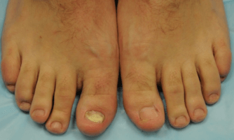

Prácticas tibetanas en el tratamiento de hongos de las uñas
La efectividad de la medicina tibetana ha sido durante mucho tiempo una leyenda. Sus descubrimientos en el campo de la medicina son verdaderamente únicos y fundamentalmente diferentes de las prácticas de cualquier otra cultura. Las composiciones de los medicamentos son múltiples y siempre sorprenden por una combinación inesperada, además, todo lo que se hace dentro de la medicina tibetana es absolutamente natural. Esto también es cierto en el caso de los medios antimicóticos. Con toda la variedad de tipos de esta enfermedad, las prácticas tibetanas curan con éxito cualquier tipo de hongos de las uñas.
Tipos de hongos de las uñas
Destacan 4 tipos principales de hongos de las uñas:
Dependiendo de la variedad de hongos, la infección se divide en 4 grupos:
La onicomicosis distal o lateral distal es el tipo más común de hongos de las uñas. Desde los bordes de la placa de uñas el hongo penetra debajo de la cama de la uña, por lo que la uña cambia de color, comienza a desmoronarse y adelgazarse.
La onicomicosis subungueal proximal es un tipo raro de hongos de las uñas. La infección empieza desde el lado de la cutícula, luego cubre el agujero de la uña. En este caso, la mancha blanca se expande luego por toda la uña.
La onicomicosis superficial blanca se manifiesta en forma de manchas blancas, rayas en las placas de uñas que van desde la cutícula hasta el borde. Con el tiempo, se vuelven más grandes, crecen y adquieren color amarillo.
La onicomicosis distrófica total destruye toda la placa de uñas, en cuyo proceso la uña se espesa fuertemente, cambia de color y forma.

Tratamiento de hongos de las uñas en el Tíbet
Infección por hongos es una enfermedad extraordinariamente persistente y que requiere un tratamiento intensivo a largo plazo. Las cremas tradicionales, cuyo efecto no dura más de 10-15 minutos después de la absorción completa, pueden retrasar el proceso de tratamiento para varios meses sin destruir el virus. En el Tíbet para la lucha contra los hongos de las uñas se ha utilizado un enfoque integral durante muchos siglos. Las compresas impregnadas con una mezcla de plantas curativas se aplican continuamente durante un mes, después de lo cual el virus del hongo de las uñas desaparece por completo.
Hoy en día, algunos remedios de medicina tibetana se exportan con éxito en todo el mundo. Incluso medicamentos antimicóticos. es un medicamento natural creado sobre la base de prácticas tibetanas para el tratamiento de los hongos de las uñas. Este crema recrea plenamente la antigua técnica de tratamiento del hongo, siendo su copia moderna. La fórmula que los monjes tibetanos han utilizado durante siglos no se ha modificado en el complejo y se ha utilizado en su forma original.
Clínicamente se ha demostrado que qlos remedios de medicina tibetana en el tratamiento de los hongos son 5 veces más efectivos que cualquier otro medicamento tradicional.
El crema tiene una composición 100% natural, que
incluye:
1)CHAMOMILA RECUTITA FLOWER EXTRACT que es un atibiótico natural
que tiene un efecto antifúngico y cicatrizante.
2)BUTYROSPERMUM PARKII BUTTER que fortalece el sistema inmune,
mejora la circulación sanguínea, alivia el proceso inflamatorio.
3)PINUS SYLVESTRIS LEAF OIL que acelera el proceso de
curación de los tejidos, mejora el proceso de regeneración
celular.
4)MELALEUCA ALTERNIFOLIA LEAF OI que tiene un efecto suavizante, calma
la piel, cura las grietas en la piel.
5)PROPOLIS EXTRACT que alivia rápidamente la picazón
y las sensaciones dolorosas.
El hongo de las uñas es una de las enfermedades más insensibles que puede desarrollar discretamente. Sin embargo, la falta de atención a su propia salud a menudo tiene los efectos muy desagradables. Más del 70% de las personas infectadas con el virus y que han descuidado la enfermedad pierden sus uñas total o parcialmente. ¡Cuídate y mantente sano!
En la lucha contra los hongos del pie hoy el crema es uno de los remedios más efectivos. Su peculiaridad es que, además de curar los síntomas de la micosis, tiene un efecto terapéutico complejo en ambas áreas problemáticas a la vez (pies y uñas). El crema tiene un fuerte efecto antiinflamatorio, antimicrobiano y curativo, fortalece el sistema inmune. Recientemente comencé a recomendarlo a mis pacientes tanto para el tratamiento como para la prevención del hongo del pie y ya recibo comentarios positivos sobre el fármaco.


